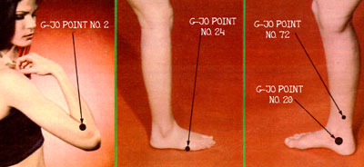

MOTHER NO. 61 featured an article describing how to relieve pain and promote healing by using six basic "acupressure" points. Now, here's...
There are four things that can turn a wonderful hike into an absolutely miserable experience: sunburn, bug bites, poison ivy, and twisted ankles. At home, such ills might seem like small inconveniences, but when one is dealing with backpacks, bedrolls, and the thought that there are long miles to go before the itch or pain is relieved, even minor troubles can become major psychophysical health problems to all but the heartiest of trekkers.
Fortunately, there's a drugless, immediately effective method of relieving those problems, as well as about 250 other ailments and injuries we're likely to encounter during our lives. It's called G-Jo.
A BRIEF OVERVIEW
G-Jo (which means "first aid" in Chinese, but is actually much more than just an interesting first aid method) has two simple operating rules: Find the right acupressure point to relieve your symptom(s), and stimulate that point properly.
Of course, in order to find the correct spot, you'll first need to know which of the 116 G-Jo points is best for your problem, and then you'll have to determine its precise location. [EDITOR'S NOTE: Each G-Jo point is detailed in The Natural Healer's Acupressure Handbook: G-Jo Fingertip Technique, available at many bookstores or libraries or from Mother's Bookshelf, P.O. Box 70, Hendersonville, North Carolina 28791 for $9.95, plus 95d shipping and handling.] Generally, there are several of the pinheadsized areas that-when stimulated-will relieve a symptom, and it's not unusual to have as many as 15 or 20 to choose from ... one or two of which will be profoundly effective.
TO HIT THE SPOT
In order to locate a specific pressure pointfor example, G-Jo No. 2, an excellent choice for relieving the discomforts of poison ivy, sunburn, and other minor burns or skin irritations-you'll need to use the tip, not the pad or fleshy part, of your thumb or finger. Begin by probing as deeply as you can in the appropriate area . . . in the case of G-Jo No. 2, on the outside of the arm at the end of the crease found at the crook of the elbow. First, though, straighten your arm and relax it, since it's much more difficult to locate a point if the area's muscles are tense. Now, with the tip of the thumb-using your left digit if you're probing your right arm and vice versa-poke around deeply until you discover a very tender "ouch" spot.
A G-Jo point will, when pressed, produce a unique feeling somewhat akin to the throb of a pinched nerve or toothache. Probing an area even as little as 1/4 to 1/2 inch away will cause a vastly different sensation. In addition, a good point will often make you break out in an immediate flush of perspiration-or create a sudden sense of relaxation or feeling of warmth-when it's deeply stimulated.
While each G-Jo spot is located in a different part of the body, the rules for finding and using the points are generally the same. First, locate the proper place with a deep, probing pressure from the thumb tip . . . the bent knuckle of the index finger . . . or even the end of a pencil, pen, etc. (you can use anything that's not sharp and that can safely generate up to the 20 pounds of pressure needed to find some of the points). Then stimulate it with a deep, digging or goading massage. Get in there and really work the point around! Usually, just 15 or 20 seconds of this admittedly sometimes painful process will be enough to bring profound relief.
Remember, too, that most G-Jo points are stimulated bilaterally . . . that is, after you've found and goaded a point on one side of your body, you should duplicate that procedure on the opposite side.
A FEW RULES TO OBSERVE
If, then, you can tolerate the few seconds of toothache-like throbbing-a pain that often actually "hurts good"-you'll have a sure-fire "anesthetic" that you can employ anytime relief from discomfort is needed. However, there are a few people who shouldn't use this technique: specifically pregnant women, patients suffering from severe heart problems, and folks who wear pacemakers. Such men and women should generally avoid G-Jo, except in times of emergency.
Furthermore, folks who do use acupressure should observe a few precautions. Don't-for example-employ G-Jo within several hours after taking drugs, medications, alcohol, or other intoxicants. Don't use a point that lies beneath a scar, mole, wart, or other blemish (try another spot, instead). Wait for about half an hour before using G-Jo if you've just taken a hot bath, eaten a heavy meal, or done strenuous exercise. And, if you find you have to restimulate a point more than four or five times a day-or use G-Jo for a problem for more than four or five days in a rowrecognize that either you're using the wrong spot or your illness/injury is beyond the scope of acupressure, and it's time to see your doctor.
BANISH BUG-BITE BOTHER
There are two good pressure points for dealing with the painful sting of, say, a bee or yellow jacket. The first one (which I used successfully to help a young boy who'd been attacked by a swarm of angry hornets) is G-Jo No. 20.
The spot is found along a diagonal line between the crown of the inner ankle and the tip of the heel. Press deeply, and you can't miss it. Stimulate this point immediately after getting stung or bitten. Then-if the pain returns later-simply repeat the procedure as soon as you notice the discomfort returning!
Your goal, of course, will be to give yourself increasing spans of relief between necessary restimulations. One or two massages will often completely eliminate the pain of an injury (that was the case with the boy's hornet stings) . . . but, occasionally, it will take a few more applications than that. You should get at least an hour's relief from minor symptoms after the first stimulation, if you've used the right points properly.
The second bug-bite relief spot-G-Jo No. 24-is also located on the foot and is useful in relieving sunburn, too! You'll find it on the outside edge of either foot, just in back of the bulge that's directly behind the little toe. (Run the tip of your thumb or finger back from the little toe . . . around the bulge ... then dig in!) This spot will be particularly tender if you're suffering from either sunburn or bug-bite pain, and is, therefore, usually not hard to locate.
SOOTHE A SPRAIN
G-Jo No. 72 is a good point to use for twisted or swollen ankles. It's found about two inches-twice the width of your thumb, actually-above the crown of the inner ankle bone, on a vertical line slightly behind that bony bulge. If you twist or sprain your ankle, immediately reach for that point and goad it. And don't forget, if you notice any discomfort returning, to be sure to restimulate the same spot right away.
THE "POINT" OF THE MATTER . . .
Summer's warm weather provides many opportunities for most of us to get out and about, and such outdoor activity, coupled with the hazards that accompany the sunny season, can sometimes result in problems. But you can handle summer's itches and minor ills without resorting to drugstore sprays or stomachharming medicine-chest tablets. The key to quick and effective relief often lies in simply helping your body ease its own aches and pains!
EDITOR'S NOTE: If you'd like a free chart of six other basic G-Jo points (those covered in MOTHER NO. 61), send along, self-addressed, stamped envelope to The G-Jo Institute, Dept. TMEN, P.O. Box 8060, Hollywood, Florida 33024.
|
 |
|
|